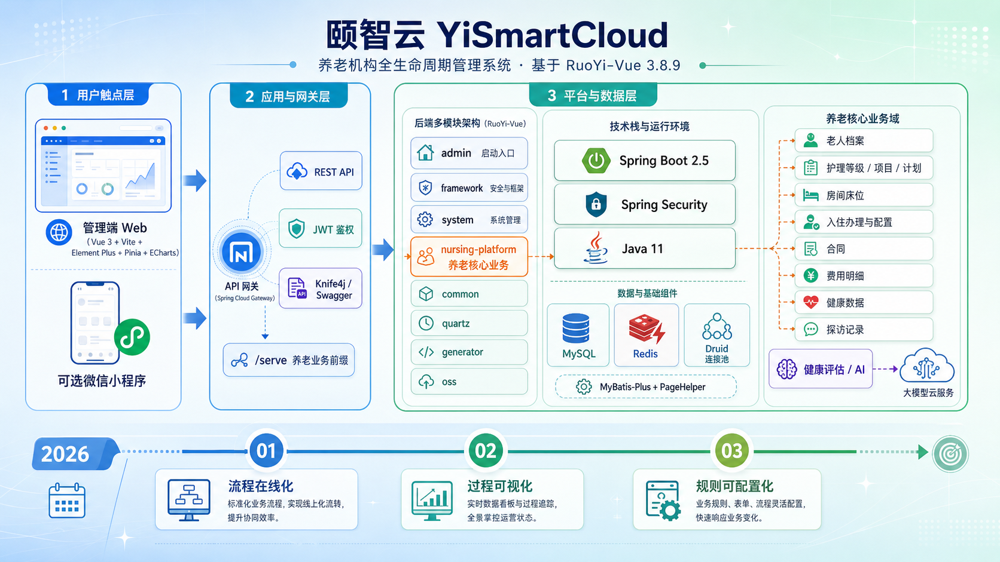

覆盖入住办理、床位管理、护理等级配置、健康记录等全流程
面向养老机构的一体化管理平台
覆盖运营管理全流程，让养老服务更智能、更高效
入住办理、合同签约、费用结算全流程在线，可追踪、可审批、可沉淀。
老人状态、床位占用、服务记录、费用明细一目了然，数据驱动决策。
菜单权限、数据字典、系统参数均可配置，降低迭代成本，灵活适应业务变化。
PC管理端 + 微信小程序家属端，一套后端服务支撑多端访问，统一数据。

保障系统可靠性与可维护性
Vue 3 + Vite
现代化前端框架，极速开发体验
Element Plus
企业级UI组件库，开箱即用
Pinia + Vue Router
状态管理与路由，清晰的架构分层
ECharts
数据可视化，丰富的图表支持
Spring Boot 2.5.x
Java企业级开发框架，稳定可靠
MyBatis-Plus
ORM框架，简化数据库操作
Spring Security + JWT
安全框架，完善的权限控制
MySQL + Redis
数据存储与缓存，高性能保障
轻松搭建本地开发环境
# 1. 初始化数据库
mysql -u root -p < sql/ry_20250417.sql
# 2. 修改数据库配置
vim application-druid.yml
# 3. 构建并启动
cd YiSmartCloud-background
mvn clean install -DskipTests
mvn -pl admin spring-boot:run
# 1. 安装依赖
cd YiSmartCloud-front
npm install
# 2. 启动开发服务器
npm run dev
管理端与小程序共用后端能力，一套系统多端访问